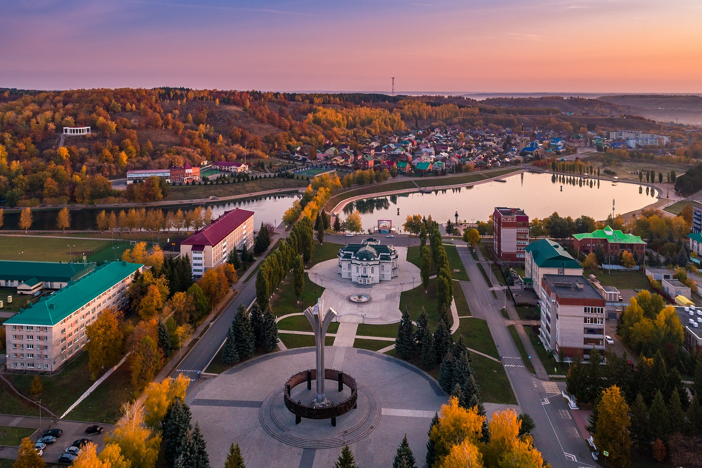

Лениногорск — город в Республике Татарстан России, административный центр Лениногорского района. Образует муниципальное образование город Лениногорск со статусом городского поселения как единственный населённый пункт в его составе. Население по данным на 2021 год — 60 993 человека. Национальности:русские (43,3%), татары (42,8%), мордва (5,3%), чуваши (5,8%). День города: 18 августа.История:Основан в XVIII веке как село Новая Письмянка. С 1951 года по 1955 год — рабочий посёлок с одноимённым названием. 18 августа 1955 года село Новая Письмянка преобразовано в город и названо Лениногорск в честь В. И. Ленина.Факторы становления: открытие в 1948 году Ромашкинского нефтяного месторождения, которое превратило аграрный район в стратегически важный индустриальный центр.